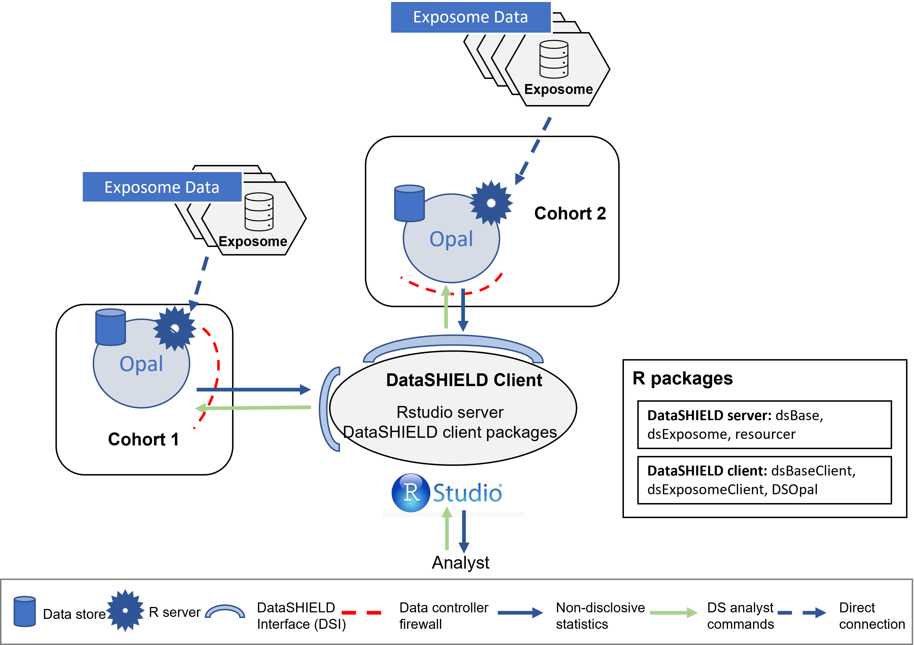

dsExposome: Use case 1
Description
In the first use case, we will demonstrate the capabilities of the dsExposome package and DataSHIELD infrastructure for performing a pooled Exposome-Wide Association Study (ExWAS) on synthetic exposome data. The data consists of 88 exposures and 109 individuals, divided into two cohorts of 51 and 58 individuals respectively, stored on two different Opal servers. Figure 1 illustrates the infrastructure of this use case, showcasing the decentralization of the data and the secure nature of the analysis performed through DataSHIELD. By utilizing dsExposome and DataSHIELD, we aim to demonstrate the potential of this approach for large-scale exposome studies, advancing our understanding of the relationship between environmental exposures and human health. Performing a pooled analysis with the dsExposome package on the DataSHIELD infrastructure means that the results we receive are the same as if we had all the data together in the same dataset. This provides a significant advantage over traditional meta-analysis studies, where results are often limited by the heterogeneity of the data or the inability to pool data from multiple sources. This offers the ability to analyze the combined data from two different opal servers as if it were one dataset, providing a robust and secure approach to exposome analysis.

Connecting to the Opal server
To begin our analysis, we begin by connecting to the analysis servers. On them, there is all the data that we will need in this use case.
On the following chunk, we will perform the connection and load the exposome data that we will be using.
library(DSOpal)
library(dsBaseClient)
library(dsExposomeClient)
builder <- DSI::newDSLoginBuilder()
builder$append(server = "cohort1",
url = "https://opal-demo.obiba.org/",
user = "dsuser",
password = "P@ssw0rd",
profile = "exposome",
resource = "EXPOSOME.exposome_use_case_1_a")
builder$append(server = "cohort2",
url = "https://opal-demo.obiba.org/",
user = "dsuser",
password = "P@ssw0rd",
profile = "exposome",
resource = "EXPOSOME.exposome_use_case_1_b")
logindata <- builder$build()
connections <- DSI::datashield.login(
logins = logindata,
assign = TRUE,
symbol = "exposome_resource"
)
datashield.assign.expr(
conns = connections,
symbol = "exposome_set",
expr = "as.resource.object(exposome_resource)"
)Exploration of the data
With the connection performed and the data loaded, we can begin by performing some simple exploration of the data. In this use case we will check for the percentage of missings by exposure. Also, we will retrieve the names of the exposures families. Finally, we will check the phenotype variables available on the dataset.
missings <- ds.tableMissings("exposome_set")
ds.plotMissings(missings)$pooled
ds.familyNames("exposome_set")$cohort1
[1] "Air Pollutants" "Metals" "PBDEs"
[4] "Organochlorines" "Bisphenol A" "Water Pollutants"
[7] "Built Environment" "Cotinine" "Home Environment"
[10] "Phthalates" "Noise" "PFOAs"
[13] "Temperature"
$cohort2
[1] "Air Pollutants" "Metals" "PBDEs"
[4] "Organochlorines" "Bisphenol A" "Water Pollutants"
[7] "Built Environment" "Cotinine" "Home Environment"
[10] "Phthalates" "Noise" "PFOAs"
[13] "Temperature" ds.exposome_variables("exposome_set", target = "phenotypes")$cohort1
[1] "whistling_chest" "flu" "rhinitis" "wheezing"
[5] "birthdate" "sex" "age" "cbmi"
[9] "blood_pre"
$cohort2
[1] "whistling_chest" "flu" "rhinitis" "wheezing"
[5] "birthdate" "sex" "age" "cbmi"
[9] "blood_pre" Exposome Wide Association Study
And finally, we will perform the ExWAS presented on the manuscript. We will check for the association of the flu health condition to the exposures of the families Air Pollutants and Metals.
res <- ds.exwas(
model = "flu ~ 1",
Set = "exposome_set",
family = "binomial",
type = "pooled",
exposures_family = c("Air Pollutants", "Metals"),
tef = FALSE
)DT::datatable(res$exwas_results |>
dplyr::mutate(dplyr::across(is.numeric, round, digits = 2)),
options = list(dom = 'pt'))Visualization of results
Finally we visualize the results of the ExWAS.
ds.plotExwas(res, thld_pvalue = 0.05)
Following good practices, once we have finished using the Opal server for our purposes, we logout of it to free the computational resources.
datashield.logout(connections)